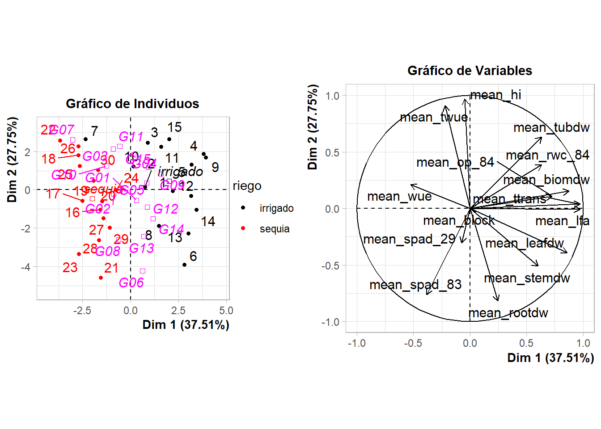

EFICIENCIA DE USO DE AGUA EN QUINCE GENOTIPOS DE PAPA (SOLANUM TUBEROSUM L.) BAJO CONDICIONES DE ESTRES HIDRICO POR SEQUI
1 presentación
somos estudiantes de octavo siclo del curso de programación y analisis de datos, el contenido de la siguiente pagina web es el procesamiento de una base de datos teniendo en cuenta las variables clorofila, potencial osmotico en las plantas y contenido de agua en las plantas.
2 Importar base de datos
source('https://inkaverse.com/setup.r')
ℹ The googlesheets4 package is using a cached token for
'evilchezbustamante@gmail.com'.
ℹ The googledrive package is using a cached token for
'7370404121@untrm.edu.pe'.
Se ajusta un modelo de análisis de varianza (ANOVA) con la fórmula spad_29 ~ bloque + riego + geno + riego*geno. En el resultado, el efecto del genotipo (geno) es altamente significativo (p < 0.001), mientras que los efectos de riego y la interacción riego:genono lo son, sugiriendo que genotiene un efecto importante en spad_29.
Un diagrama de caja gráfico se construye para visualizar la interacción entre riego y genotipo. Este gráfico muestra cómo varía la variable spad_29entre los diferentes genotipos bajo condiciones de sequía e irrigación, con los valores atípicos (son observaciones cuyos valores son muy diferentes a las otras observaciones del mismo grupo de datos) resaltados en color rojo.
ggplot(fb, aes(x = geno, y = spad_29, colour = riego)) +geom_boxplot(outlier.colour ="red" , outlier.shape =16, outlier.size =2) +labs(title ="boxplot con interacción de niveles de riego y genotipo" , x ="Interacción Riego y Genotipo",y ="Valor de la variable respuesta") +theme_minimal() +theme(axis.text.x =element_text(angle =45, hjust =1))
3.3 modelo lineal mixto para spad_29
Un diagrama de caja gráfico se construye para visualizar la interacción entre riego y genotipo. Este gráfico muestra cómo varía la variable spad_29entre los diferentes genotipos bajo condiciones de sequía e irrigación, con los valores atípicos (son observaciones cuyos valores son muy diferentes a las otras observaciones del mismo grupo de datos) resaltados en color rojo.
library(ggplot2)library(dplyr)library(tidyr)ggplot(grupos, aes(x = geno, y = spad_29, fill = riego)) +geom_bar(stat ="identity", position ="dodge", color ="black") +labs(x ="Genotipo", y ="spad_29", fill ="Riego") +theme_minimal() +theme(axis.text.x =element_text(angle =45, hjust =1)) +ggtitle("Gráfico de barras: spad_29 por genotipo y riego") +geom_text(aes(label =str_sub(groups, 1, 2)), # Mostrar solo las primeras 2 letrasposition =position_dodge(0.9), vjust =-0.5) # Ajusta la posición vertical de las letras
3.3.2 emmeans: comparacion de medias
Se utiliza el paquete emmeans para obtener estimados marginales y hacer comparaciones de medios entre genoy riego. Los resultados muestran intervalos de confianza para cada genotipo en ambas condiciones de riego ( sequiae irrigado), así como los grupos que no presentan diferencias significativas.
dtcm <-as.data.frame(cm2) %>%rename(sig =".group")ggplot(dtcm, aes(x = geno, y = emmean, fill = riego)) +geom_bar(stat ="identity", position ="dodge", color ="black") +geom_text(aes(label = sig, y = emmean*1*1),position =position_dodge(width =0.9),vjust =0) +labs(x ="Genotipo", y ="spad_29", fill ="Riego") +theme_minimal() +theme(axis.text.x =element_text(angle =45, hjust =1)) +ggtitle("Gráfico de barras: spad_29 por genotipo y riego")
4 variable op_84
4.1 modelo lineal para op_84
Riego es el único factor con un efecto altamente significativo en op_84 (p < 0.001), lo cual indica que el tratamiento de riego influye fuertemente en los valores de op_84. Genotipo tiene un efecto marginalmente significativo (p ≈ 0.09), lo que sugiere una tendencia a afectar op_84, pero no es concluyente. Bloque y la interacción Riego x Genotipo no son significativos (p > 0.05), lo que indica que no tienen un impacto estadísticamente importante en `op_84
Eje x: Representa los diferentes genotipos (geno), con colores que indican los distintos niveles de riego. Eje y: Muestra los valores de la variable de respuesta op_84.
Las diferencias en la altura de las cajas indican que algunos genotipos tienen mejores rendimientos (op_84) bajo ciertos tratamientos de riego. Si las cajas de un mismo genotipo son de diferentes colores y muestran variaciones significativas en altura, esto sugiere que el riego influye en la respuesta del genotipo a op_84.
ggplot(fb, aes(x = geno, y = op_84, colour = riego)) +geom_boxplot(outlier.colour ="red" , outlier.shape =16, outlier.size =2) +labs(title ="boxplot con interacción de niveles de riego y genotipo" , x ="Interacción Riego y Genotipo",y ="Valor de la variable respuesta") +theme_minimal() +theme(axis.text.x =element_text(angle =45, hjust =1))
4.3 modelo lineal mixto para op_84
El tratamiento de riego tiene un efecto significativo sobre op_84. Genotipo tiene un efecto marginalmente significativo, sugiriendo que existen diferencias en la respuesta de los genotipos, pero no son concluyentes. No se observa una interacción significativa entre riego y genotipo en cuanto a su efecto sobre op_84. Esto refuerza la idea de que el riego es el principal factor que afecta los resultados, mientras que la variabilidad entre genotipos es menos clara.
El efecto del bloque no es significativo (p > 0.05), lo que sugiere que las variaciones en op_84 no dependen de las diferencias entre bloques. El efecto de genotipo es marginalmente significativo (p ≈ 0.09). Esto sugiere que puede haber diferencias en op_84 entre los distintos genotipos, pero no hay suficiente evidencia para considerarlo concluyente. La interacción entre riego y genotipo no es significativa (p > 0.05). Esto sugiere que el efecto del riego en op_84 no varía considerablemente entre diferentes genotipos.
library(ggplot2)library(dplyr)library(tidyr)ggplot(grupos, aes(x = geno, y = op_84, fill = riego)) +geom_bar(stat ="identity", position ="dodge", color ="black") +labs(x ="genotipo", y ="op_84", fill ="Riego") +theme_minimal() +theme(axis.text.x =element_text(angle =45, hjust =1)) +ggtitle("Gráfico de barras: op_84 por genotipo y riego") +geom_text(aes(label =str_sub(groups, 1, 2)), # Mostrar solo las primeras 2 letrasposition =position_dodge(0.9), vjust =-0.5) # Ajusta la posición vertical de las letras
dtcm <-as.data.frame(cm2) %>%rename(sig =".group")ggplot(dtcm, aes(x = geno, y = emmean, fill = riego)) +geom_bar(stat ="identity", position ="dodge", color ="black") +geom_text(aes(label = sig, y = emmean*1*1),position =position_dodge(width =0.9),vjust =0) +labs(x ="Genotipo", y ="op_84", fill ="Riego") +theme_minimal() +theme(axis.text.x =element_text(angle =45, hjust =1)) +ggtitle("Gráfico de barras: op_84 por genotipo y riego")
5 variable rwc_84
5.1 modelo lineal para rwc_84
Se ajusta un modelo de análisis de varianza (ANOVA) con la fórmula: rwc_84∼Bloque+r i e g o+g e n o+r i e g o: g e n o En el resultado, el efecto del genotipo es significativo (p < 0.05), indicando que los diferentes genotipos influyen en el contenido de agua. Sin embargo, los efectos de riego y la interacción entre riego y genotipo no son significativos, sugiriendo que el riego tiene un impacto limitado en esta variable. “Geno”
Se construye un diagrama de caja para visualizar la interacción entre riego y genotipo: Este gráfico permite observar cómo varía la variable entre los diferentes genotipos bajo condiciones de sequía e irrigación, destacando los valores atípicos en color rojo.rwc_84
ggplot(fb, aes(x = geno, y = rwc_84, colour = riego)) +geom_boxplot(outlier.colour ="red" , outlier.shape =16, outlier.size =2) +labs(title ="boxplot con interacción de niveles de riego y genotipo" , x ="Interacción Riego y Genotipo",y ="Valor de la variable respuesta") +theme_minimal() +theme(axis.text.x =element_text(angle =45, hjust =1))
5.3 modelo lineal mixto para rwc_84
Se utiliza un modelo lineal mixto para ajustar considerando como efecto aleatorio:”rwc_84” ”bloque” rwc_84∼r i e g o+g e n o+r i e g o:g e n o+( 1∣ bloque ) Este enfoque permite evaluar los efectos fijos de riego y genotipo mientras se controla la variabilidad entre bloques.
Se aplica ANOVA para el modelo: Modelo<− a o v (fórmula=rwc_84∼Bloque+r i e g o+g e n o+r i e g o: g e n o, datos=f b) an ov a (m o d e l o) ’ ’’ Luego se realizan pruebas post hoc (Duncan y Tukey) para identificar diferencias específicas entre grupos:
library(ggplot2)library(dplyr)library(tidyr)ggplot(grupos, aes(x = geno, y = rwc_84, fill = riego)) +geom_bar(stat ="identity", position ="dodge", color ="black") +labs(x ="genotipo", y ="rwc_84", fill ="Riego") +theme_minimal() +theme(axis.text.x =element_text(angle =45, hjust =1)) +ggtitle("Gráfico de barras: rwc_84 por genotipo y riego") +geom_text(aes(label =str_sub(groups, 1, 2)), # Mostrar solo las primeras 2 letrasposition =position_dodge(0.9), vjust =-0.5) # Ajusta la posición vertical de las letras
5.4.3 emmens comparacion de medias para rwc_84
Se utiliza el paquete para obtener estimados marginales y hacer comparaciones de medios entre genotipo y riego: “emmeans” Los resultados muestran intervalos de confianza para cada combinación de genotipo bajo ambas condiciones de riego (sequía e irrigado), así como los grupos que no presentan diferencias significativas.
dtcm <-as.data.frame(cm2) %>%rename(sig =".group")ggplot(dtcm, aes(x = geno, y = emmean, fill = riego)) +geom_bar(stat ="identity", position ="dodge", color ="black") +geom_text(aes(label = sig, y = emmean*1*1),position =position_dodge(width =0.9),vjust =0) +labs(x ="Genotipo", y ="rwc_84", fill ="Riego") +theme_minimal() +theme(axis.text.x =element_text(angle =45, hjust =1)) +ggtitle("Gráfico de barras: rwc_84 por genotipo y riego")
# Cargar las librerías necesariaslibrary(FactoMineR)library(dplyr)library(ggplot2)library(gridExtra)# Agrupar y resumir los datosmv <- fb %>%group_by(riego, geno) %>%summarise(across(where(is.numeric), ~mean(., na.rm =TRUE), .names ="mean_{col}")) %>%ungroup() # Desagrupar los datos después de resumir# Realizar el PCA, ajustando quali.sup a las columnas cualitativas (riego y geno)pca_result <-PCA(mv, scale.unit =TRUE, quali.sup =c(1, 2), graph =FALSE)# Graficar los individuosp1 <-plot.PCA(pca_result, habillage ="riego", title ="Gráfico de Individuos")# Graficar las variablesp2 <-plot.PCA(pca_result, choix ="var", title ="Gráfico de Variables")# Combinar las gráficas en una solagrid.arrange(p1, p2, nrow =1)

9 referencia
Lozano Isla, F. (2015). Eficiencia de uso de agua en quince genotipos de papa (Solanum tuberosum L.) bajo condiciones de estrés hídrico por sequía. https://hdl.handle.net/20.500.12996/2093